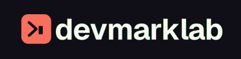

01
Be Found
Show up wherever your buyers search
Build a discoverable brand across traditional search and AI platforms so your product appears when high-intent buyers are actively looking for answers and solutions.
5+ years of SEO and content experience across 30+ SaaS products. I get your product and know the strategies that move the needle for sustainable organic growth.
Co-founder, DevMark Lab
B2B SaaS organic growth

Co-founder of DevMark Lab
Founder Divanshu brings 10+ years of experience, and I bring 6+ years of B2B SaaS SEO and organic marketing experience. Together, we lead an eight-person team of skilled specialists across SEO, content, and organic growth.
From API-first products and developer tools to established B2B software.
+ 30 more SaaS products
Services
One connected organic growth strategy across search, AI, content, video, PR, and communities — built around your buyers and tied to meaningful business outcomes. I lead the strategy alongside our eight-person team, bringing focused expertise, consistent execution, and clear accountability to every channel.
Show up wherever your buyers search
Build a discoverable brand across traditional search and AI platforms so your product appears when high-intent buyers are actively looking for answers and solutions.
Turn attention into trust — and trust into action
Create buyer-focused content that explains your value, strengthens your positioning, and gives potential customers a compelling reason to choose your product.
Build authority that strengthens every channel
Expand your reach beyond owned content with credible mentions, relevant links, and consistent distribution that make your entire organic presence more authoritative.
Turn your website into a stronger growth foundation with strategic audits, scalable site architecture, and technical improvements that help search engines crawl, understand, and rank your product.
Capture hundreds of valuable long-tail searches with scalable, template-driven pages — without sacrificing relevance, usefulness, or quality.
Increase your chances of being discovered and cited across ChatGPT, Perplexity, Google AI Overviews, and other AI-driven search experiences.
Product-led content mapped to real buyer intent — created to earn visibility, answer buying questions, communicate your differentiation, and convert interest into action.
Search-led videos designed to build trust, rank across YouTube and Google, and turn one powerful idea into assets for your wider content engine.
Founder and brand-led content that builds authority, starts relevant conversations, and keeps your product visible to the people who influence buying decisions.
Build a credible presence in the conversations where buyers exchange recommendations, compare products, and increasingly influence what AI platforms surface.
Turn your expertise, insights, and original stories into coverage that earns attention, strengthens credibility, and generates valuable mentions from relevant publications.
Earn relevant, high-authority backlinks that improve rankings and brand authority — without directories, PBNs, or shortcuts that put your website at risk.
Transform every strong content idea into multiple channel-ready assets, helping your brand reach more buyers without constantly starting from zero.
Search, content, and authority working together to bring in the right traffic — and turn more of it into signups and revenue.
Every SaaS product solves a specific problem for a specific audience. So before we build your growth strategy, we understand your product, your buyers, and what makes them choose you.
Hear directly from founders and marketing teams about the thinking, communication, and outcomes behind our work.
It has been great working with Neha. She is super responsive, attentive to details and hard working. She helps us a lot with our SEO and content initiatives. I recommend her work to anyone looking to improve their online presence and SEO. Thanks, Neha!
I’ve been working with Neha on 2 of my products already: CaptureKit (got acquired), and SocialKit, my current product. It’s been awesome working with her; she’s professional, and the communication is great. Soon we’ll work again on a new SaaS of mine. So I really recommend her services :)
A look at how deeper audits, sharper priorities, and focused execution helped two SaaS products overcome organic growth barriers.

Years of SEO activity without momentum. We fixed the foundations, strengthened existing content, and rebuilt the strategy around ICP search intent and conversion.
≈100% higher daily organic traffic run rate
Read the full case study
Content at scale without structure. We strengthened the technical foundation, added quality control, and filled high-intent gaps across the buyer journey.
≈500% higher daily organic traffic run rate
Read the full case studyDisclaimer: client identities, website details, and commercially sensitive information have been withheld for confidentiality.
Whether you need a complete organic growth strategy, support with a specific project, or an expert answer to one question — choose the option that works best for you.
FAQs
Clear answers about how we work, what to expect, and whether we’re the right fit for your product.
You’ll work directly with me during discovery, strategy, prioritization, and important decisions. Our specialists support execution across SEO, content, and other organic channels, while I remain closely involved throughout the engagement.
We work primarily with B2B SaaS companies, API-first products, developer tools, and technical software businesses — from early-stage startups to established products looking to strengthen or scale organic acquisition.
Yes. We can lead your organic growth roadmap or collaborate with your existing SEO, content, marketing, and development teams. Responsibilities, workflows, and approvals are clearly defined before execution begins.
Both. We identify opportunities, create the roadmap, and help execute the work across technical SEO, content, AI search, video, digital PR, backlinks, communities, and organic distribution.
We first understand your product, ICP, positioning, competitors, goals, and current performance. We then audit your website, content, technical foundation, and organic visibility before recommending what should happen next.
Depending on the project, we may request access to Google Analytics, Google Search Console, your CMS, and relevant SEO or reporting tools. We only request the access required to understand performance and complete the agreed work.
No. Important content, recommendations, and website changes are reviewed before implementation or publishing. Your team stays informed, and nothing substantial goes live without the agreed approval process.
Yes. SaaS and API products often serve specific audiences whose demand is spread across problems, use cases, integrations, comparisons, documentation, and highly technical searches.
These searches may have lower volume, but they can carry much stronger buying intent. We evaluate the complete search journey, competition, ICP relevance, and conversion potential — not keyword volume alone.
It depends on your website’s current condition, competition, authority, and scope of work. Some technical and on-page improvements can create early movement, while sustainable organic growth typically builds over several months.
We define KPIs around your business goals. These may include search and AI visibility, rankings, qualified organic traffic, engagement, demo requests, product signups, conversion rates, and organic-attributed revenue.
AI may support research, ideation, analysis, and parts of the workflow, but it doesn’t replace product understanding, original thinking, editing, or quality control. Every deliverable is reviewed before it reaches your audience.
No responsible SEO professional can guarantee a particular ranking or traffic number. What we can promise is a thoughtful strategy, quality-first execution, transparent reporting, and continuous improvement based on performance.
Pricing depends on your goals, website, competition, required channels, and level of execution. After the initial conversation, you’ll receive a recommended scope with clear deliverables and pricing.
Yes. If you prefer working through an established freelance platform, you can hire me through Fiverr or Upwork. You can also work with us directly through DevMark Lab.
Yes. Client information, website access, strategy documents, and performance data are treated as confidential. Public case studies can also be anonymized when the client’s identity or commercial information cannot be disclosed.
More content and disconnected fixes won’t solve the problem. You need someone to understand your product, identify what’s blocking growth, and lead the right work from strategy through execution.
Let’s turn organic effort into visibility, ICP traffic, and qualified signups.